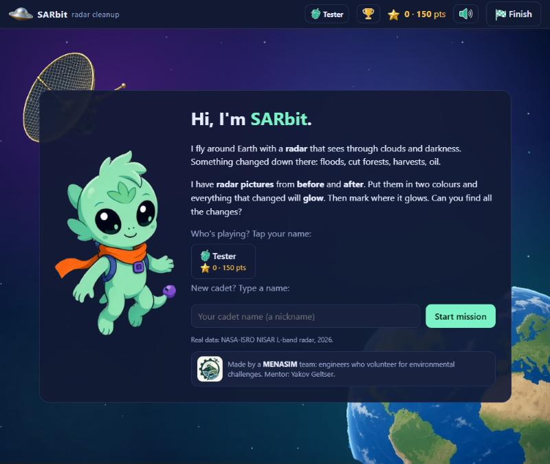
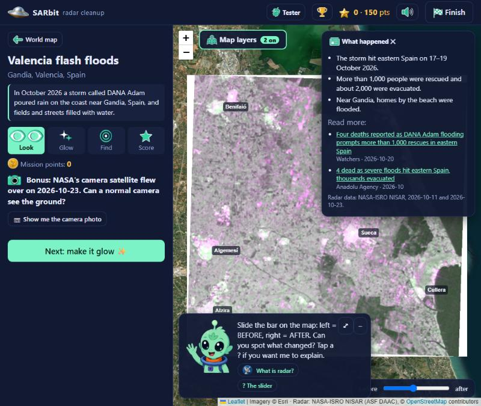
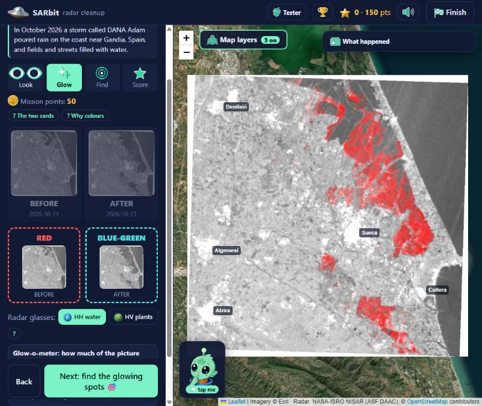
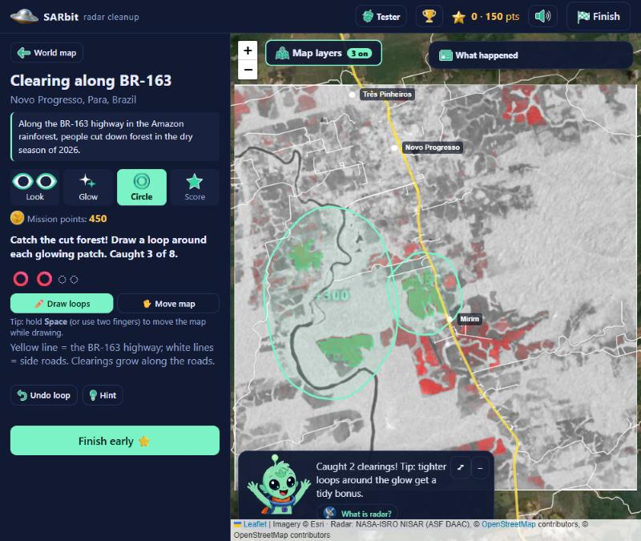
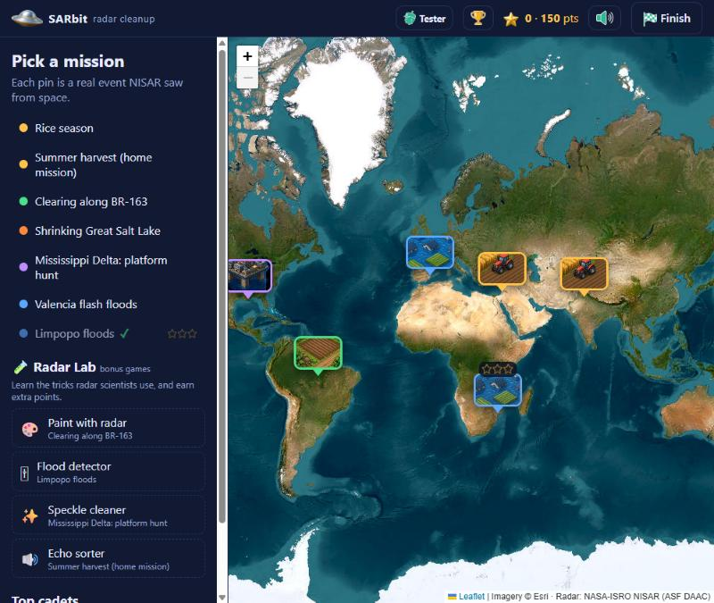
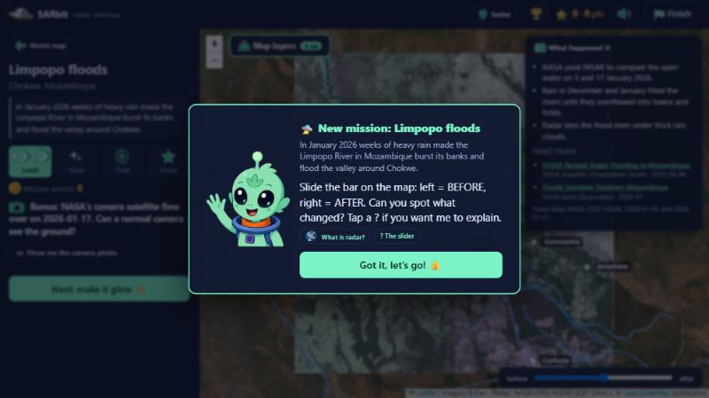
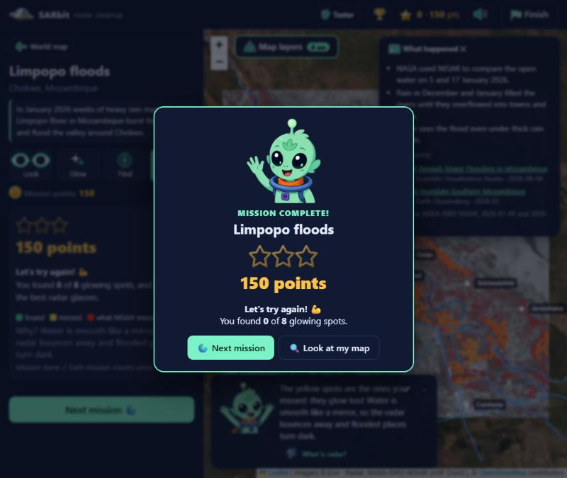

NASA Space Apps Challenge 2026 · Dancing with the SARs
SARbit
An alien with a radar teaches kids to see how Earth changes, through clouds and darkness.
Team: SARbit, a MENASIM team
Members: Eran · Yonatan · Ben
Mentor: Yakov Geltser
▶ Play: sarbit-radar-cleanup.vercel.app
Code: github.com/EranPer/SARbit

Alien art: AI-generated (Grok Imagine)Why
Radar sees what cameras can't.
But almost nobody can read it.
- Floods, storms and fires come with clouds and smoke. A camera from space often sees nothing.
- NISAR (NASA-ISRO) radar sends its own waves: it sees the ground day and night, through clouds.
- But radar pictures are grey, grainy and look "backwards": water is black, forests glow.
Our goal: a 10-year-old reads a real radar change map in 5 minutes, and knows why it matters.

Alien art: AI-generated (Grok Imagine)How it plays
Four steps per mission: look, glow, find, score

Alien art: AI-generated (Grok Imagine)
Alien art: AI-generated (Grok Imagine)What we built in 2 days
7 real events from 2026, 5 game types, a Radar Lab

Mission cards: AI-generated (Grok Imagine)| 🌊 Floods | Valencia (Spain), Limpopo (Mozambique): find the flooded spots |
| 🌳 Forest | BR-163, Amazon: lasso the new clearings |
| 🌾 Farms | Punjab rice season, Jezreel Valley harvest |
| 🏜 Land | Shrinking Great Salt Lake (Utah) |
| 🛢 Sea | Mississippi Delta: hunt the 7 oil platforms |
🧪 Radar Lab: real SAR tricks as games
Paint with polarisations (HH/HV → RGB) · tune a flood threshold in dB · clean speckle (multi-looking) · sort echoes by backscatter
Plays in any browser and on phones · several players per device · live world leaderboard
NASA data makes it possible
Every glowing pixel is real NISAR radar
📡 NISAR L-band GCOV (NASA-ISRO, ASF DAAC)
HH and HV backscatter, two dates per event, same orbit track, so the change is real and not geometry.
📷 NASA GIBS: VIIRS + HLS (Landsat / Sentinel-2)
"Can a normal camera see the ground that day?" Players compare the cloudy photo with the radar.
🛠 Pipeline
NISAR HDF5 → GDAL clip → FME → web pictures + answer grid. from_geotiff.py turns any GeoTIFF method into a new mission.
✅ The glow never lies
The game works out the answer in the browser from the same radar layers the player sees: blocks whose backscatter moved ≥ 3 dB, joined into spots. No hand-drawn answers.
🤝 Space Agency Partner data
ISRO co-built NISAR. ESA Sentinel-2 comes in through NASA's HLS. Maps: OpenStreetMap.
🔬 Honest science
We dropped a "ship or platform" game when the data showed no ships, and we flag missions where L-band can't tell the story.
Tested with players, changed by them
Players tried it. We fixed what confused them.
- A 10-minute playtest guide plus an in-game recorder (
#playtest) that logs where players get stuck. - Feedback round, 15 Nov: the alien now pops up in the middle with each step's instructions.
- Clear layer switches: radar, glow, towns, rivers, the NASA camera photo.
- A "Mission complete!" screen, and the lasso can now move the map.

Alien art: AI-generated (Grok Imagine)
Alien art: AI-generated (Grok Imagine)What's next
Every new NISAR pass can become a classroom mission
🏫 Classroom mode
A teacher picks this week's disaster; the class plays it the next morning, with the news side by side.
🌈 More radar science
InSAR "count the rainbow rings" for volcanoes and earthquakes, Sentinel-1 C-band vs NISAR L-band, a Hard mode.
🌍 For every kid
Hebrew, Arabic, Spanish… and new events built from any open data with one script.
AI use (disclosed)
Alien, icons and mission cards: generated with Grok Imagine (AI), marked on every screenshot.
Code and texts written with help from Claude Code (AI); data checks and science choices by the team.
Credits
NISAR (NASA-ISRO) via ASF DAAC · NASA GIBS (VIIRS, HLS) · OpenStreetMap · Esri imagery · Leaflet · GDAL · FME · MENASIM